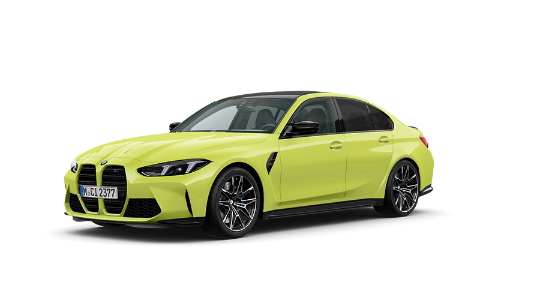
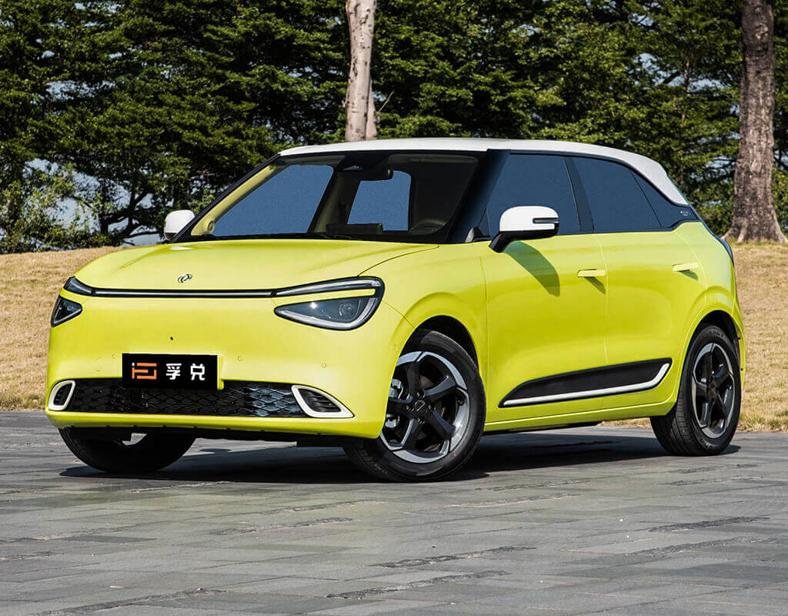

Electric cars are gaining popularity in Nepal due to their eco-friendliness and cost-effectiveness. Companies like Tesla, BYD, and local players like Deepal are leading the charge.The government is also promoting electric vehicles (EVs) through various incentives, such as tax exemptions and subsidies, to encourage their adoption. As a result, more people are considering electric cars as a viable alternative to traditional fuel-powered vehicles.
Among the popular electric cars in Nepal, the BMW Series 3 and Dongfeng Nammi stand out for their performance and design.The BMW Series 3 is known for its luxury features and advanced technology, making it a favorite among urban professionals. On the other hand, the Dongfeng Nammi offers a more affordable option without compromising on quality, making it accessible to a broader audience. Both models are well-suited for Nepal's diverse terrain and urban environments, providing a comfortable and efficient driving experience.
 Electric cars offer numerous benefits, including lower running costs, reduced emissions, and less noise pollution. They are ideal for urban commuting in Nepal.Additionally, electric vehicles require less maintenance compared to traditional cars, as they have fewer moving parts and do not require oil changes. The growing network of charging stations across major cities is also making it easier for EV owners to charge their vehicles, further enhancing the convenience of using electric cars in daily life.
As the infrastructure for electric vehicles improves, the future of electric cars in Nepal looks promising. Embracing this technology can lead to a greener and more sustainable environment.